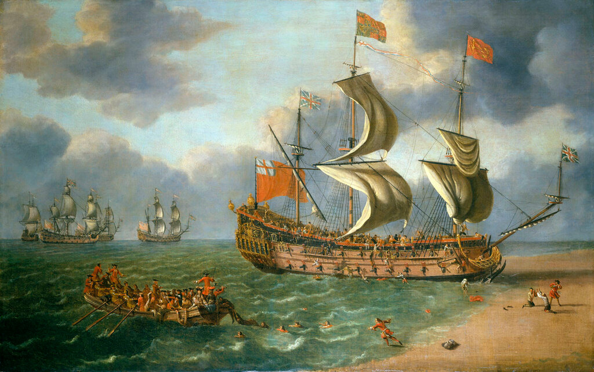
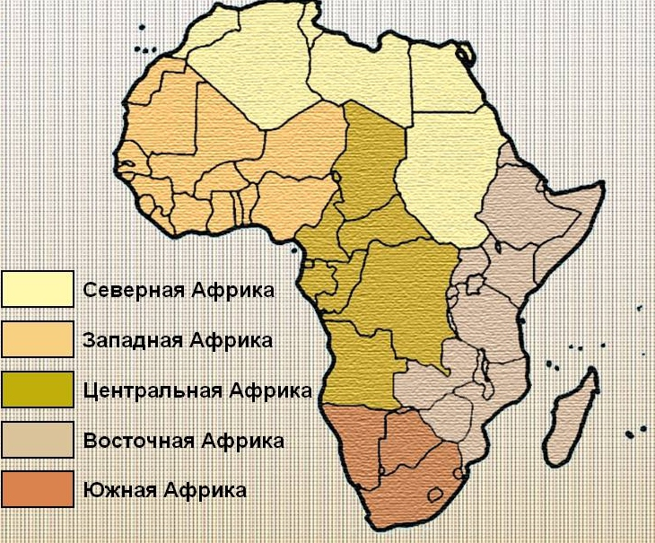
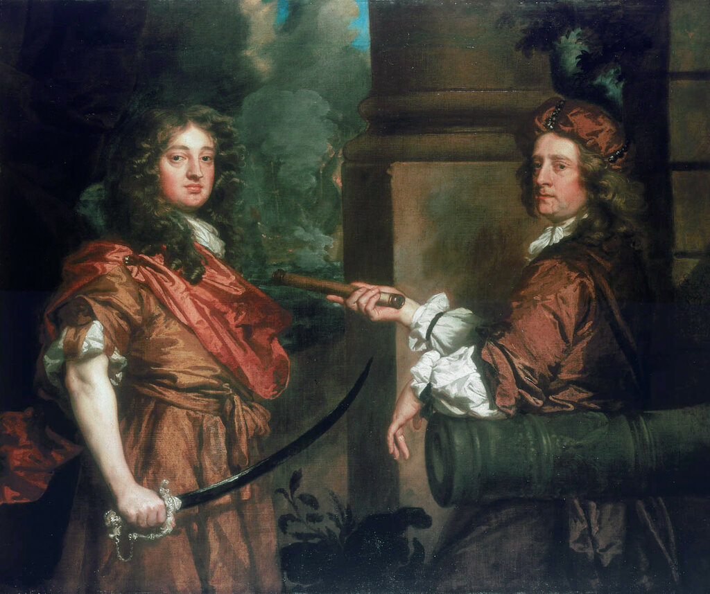
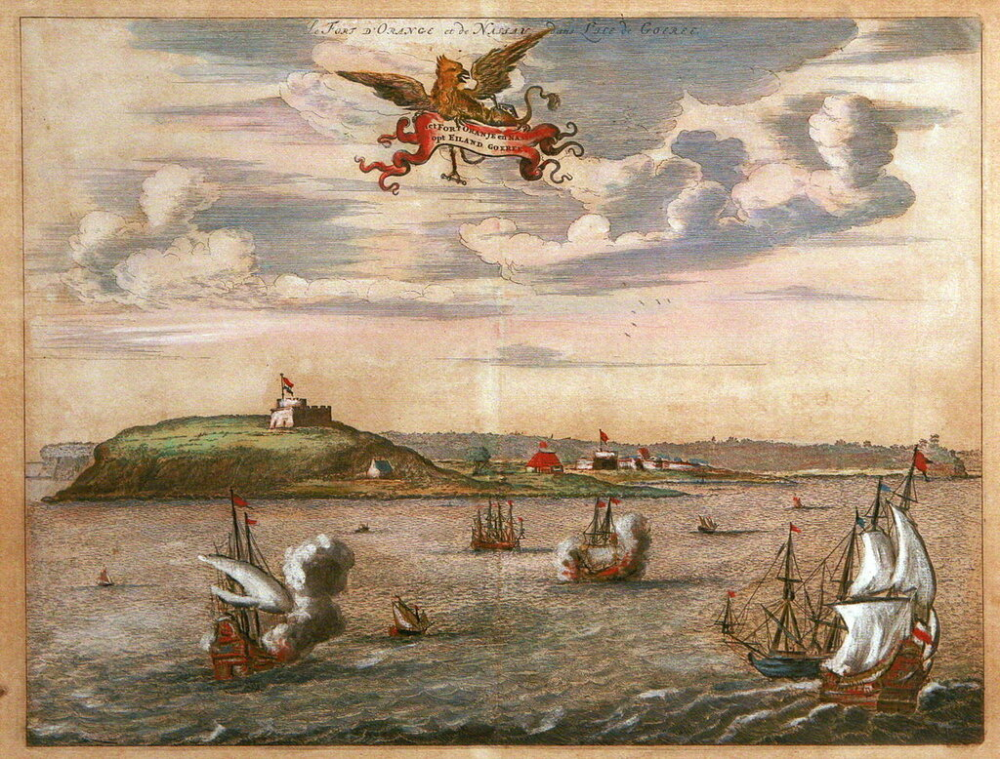
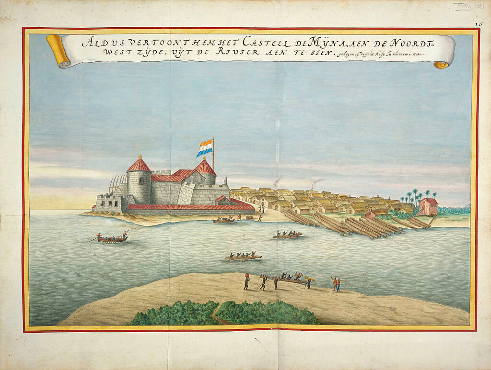
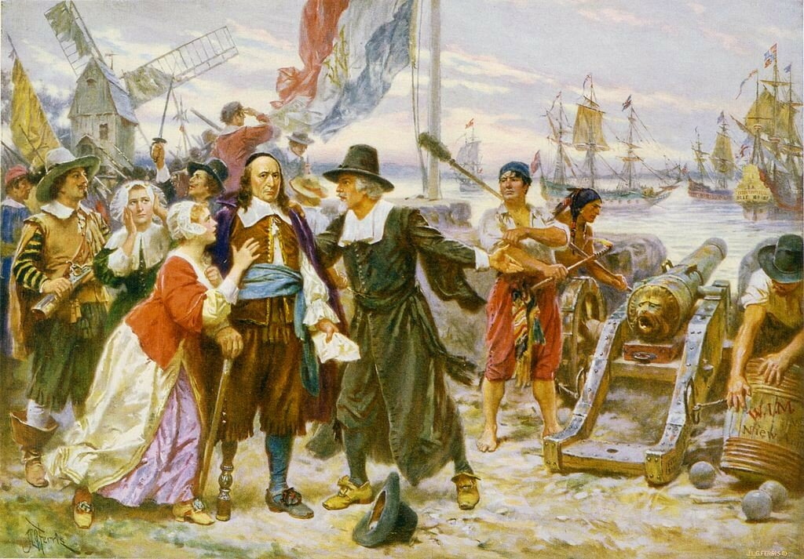

Крушение корабля третьего ранга «Глостер» в 1682 году(1682). Художник Danckerts, Johan, National Maritime Museum, Гринвич, Лондон. Изображение дает представление об аглийских линейных кораблях третьего ранга на стыке эпох Республики и Реставрации.
Недавно, при обсуждении поста в моем журнале, посвященного найму купеческих кораблей для нужд военного флота Англии, уважаемый
 sky_corsair сделал несколько критических замечаний по существу изложенного там материала. Повторю эти замечания (сначала в квадратных скобках идет отрывок из моего поста, затем вопросы по нему уважаемого коллеги:
sky_corsair сделал несколько критических замечаний по существу изложенного там материала. Повторю эти замечания (сначала в квадратных скобках идет отрывок из моего поста, затем вопросы по нему уважаемого коллеги:
1. [ Как известно, торговые интересы Англии в тот период зачастую обслуживались силами кораблей и за счет средств английского военно-морского флота.]
Откуда известно? Мне кажется, эта Ваша фраза вообще противоречит смыслу всего поста. Вы пишете о том, что английский ВМФ на время войны включал в свой состав торговые суда, а из этой фразы получается, что это торговцы использовали в коммерческих целях корабли ВМФ. Разве не абсурд? Существовала практика конвоирования, когда во время войны крупные торговые компании обращались к ВМФ с просьбой сопровождать караваны судов. Даже в этом случае такая практика была нерегулярной.
2. [ первые военные провокации английский флот устроил с помощью своих кораблей, находившихся под флагом торговых компаний у западных берегов Африки... В начале 1664 года английские военные корабли, находившиеся у побережья Западной Африки под флагом Royal African Company, атаковали фактории голландцев на Гвинейском берегу и вынудили голландских работорговцев покинуть их.]
Вот здесь тоже много вопросов. Royal African Company - крупная торговая (!) компания. Да, её учредителями были король Карл II и его брат будущий король Яков II, а также еще целый ряд придворных. Но ведь не они выходили в море, торговали и осуществляли управление компанией. Они дали компании лицензию и деньги на основание. Ну и владели пакетом акций. Основную деятельность компании осуществляли торговцы. Отсюда вопрос: действительно ли корабли под флагом Royal African Company, которые атаковали фактории голландцев на Гвинейском берегу, были кораблями английского ВМФ? Или это были вооруженные корабли самой компании (как делала Ост-Индская компания в Индии)?
(нумерация моя –g._g.)
Истина, как известно, конкретна, поэтому разбираться будем тоже конкретно и, как всегда, не торопясь.
Прежде всего о времени обсуждаемого события. Речь в нашем рассказе шла о кануне и первом периоде Второй англо-голланлдской войны, т.е. (приблизительно, с запасом) это были 1661-1667 годы. Период правления короля Карла II (1660-1685), начало эпохи, которые историки Англии называют Реставрацией.
Теперь о месте действия. Основные события разворачиваются у западного побережья Африки, которая во всех рассуждениях называется Западной Африкой . Не надо путать ее с субрегионом Западная Африка по нынешним географическим понятиям.

По хартии Карла II, которая была жалована Королевской Африканской компании в 1672 году (именно тогда она появилась под своим названием), компания получила монополию на торговлю на пяти тысячах миль западного побережья – от Зеленого мыса до мыса Доброй Надежды. В ходе дальнейшего разговора мы сделаем некоторые уточнения по локализации событий.
Действующие лица изучаемого события: торговые компании Англии, Голландии, Португалии, Франции, Швеции, Дании, Шотландии, Бранденбурга, военные корабли этих же стран, «независимые» купцы, приватиры, контрабандисты (точнее, нарушители монополии, interlopers) , пираты, местное население, их вожди и князьки и т.п.
Теперь начнем отвечать на поставленные вопросы.
1.
Откуда известно?
-Kenneth Gordon Davies, The Royal African Company, (Taylor & Francis, 1957).
-War, Entrepreneurs, and the State in Europe and the Mediterranean, 1300-1800, (BRILL, 2014)
- John Brewer, The Sinews of Power: War, Money and the English State, 1088-1783, (London, 1988).
- Rif Winfield, British Warships in the Age of Sail, 1603-1714 (Seaforth, 2009)
- Patrick J. N. Tuck, Trade, Finance and Power (Routledge, 1998)
Ряд других источников, которые касаются менее общих вопросов, приведем в следующих разделах нашего рассказа.
– «Торговцы использовали в коммерческих целях корабли ВМФ.»
Такого я не писал и напрасно приписывать мне эту мысль. В тексте буквально написано:
торговые интересы Англии в тот период зачастую обслуживались силами кораблей и за счет средств английского военно-морского флота.
Поясню. В той интерпретации, которая мне приписана, изображается некий корыстолюбивый купец, который использует в своих интересах коррумпированного государственного или военного чиновника. Но это не так. Англия в ту пору была, как заметил впервые Джон Бруэр (см выше), fiscal-military state. Связи между крупными торговыми компаниями и государством были очень тесными. И военная машина и торговые объединения хорошо уживались в рамках такого государства. Ущемление интересов британского торговца запросто могло стать поводом к войне с государством-обидчиком. Наиболее характерным примером такого поведения сторон служит история англо-голландских отношений в те годы.
Мы уже писали выше, что процесс наполнения невольничьего судна (будь оно судном компании, или «независимым» слейвером) живым товаром растягивался на месяц и больше. Все это время корабль находился у берегов Африки, являясь лакомой добычей для приватиров вражеской стороны. Государство специальными хартиями дало кораблям компании право задерживать суда-нарушители монополии; и более того, не останавливаясь на этом, выделяло в помощь компании силы военно-морского флота. Это были не только военные корабли, но и арендованные Адмиралтейством купеческие суда (например, Orange Tree; это в отношении «абсурда», который замечен критиком в моем тексте), на которые назначались экипажи военного флота (Кеннет, с.119, 189). Военные корабли обеспечивали не только прикрытие конвоев, но и направлялись со специальными миссиями к берегам Западной Африки. Именно о таком отряде идет речь в нашем рассказе о событиях накануне Второй англо-голландской войны.
Основным действующим лицом этих событий стал капитан, в дальнейшем адмирал английского военного флота Роберт Холмс.

Питер Лели. Сэр Фрешвилл Нолл и сэр Роберт Холмс. National Maritime Museum, Лондон
Впервые отряд военных кораблей под его командованием был направлен к берегам Западной Африки в 1661 году (отвечая на вопрос, действительно ли корабли под флагом Royal African Company, которые атаковали фактории голландцев на Гвинейском берегу, были кораблями английского ВМФ?) . Флагманский корабль этого отряда Henrietta - корабль третьего ранга водоизмещением 781 т, до Реставрации назывался Langport . Отряд был небольшим, (помимо флагмана еще четыре корабля: Sophia (4-й ранг, 34 орудия), Amity (фрегат,38 орудий), Griffin (брандер), и Kinsale (6-й ранг, 10 орудий.). Соответствующие характеристики этих кораблей и принадлежность их английскому военному флоту сомневающиеся могут проверить по справочнику Уинфилда.
Показательные репрессии против голландских купцов и приватиров у африканского побережья наделали много шума. Вторично более крупный отряд военных кораблей под командованием Холмса был отправлен в Западную Африку в конце 1663 года. Инструкции на поход подписал лорд верховный адмирал Яков, будущий король Англии. Обращают на себя внимание следующие указания : 'promote the Interests of the Royall Company' и 'kill, take, sink or destroy such as shall oppose you' – ‘продвигать интересы Королевской (Африканской) компании’ и ‘убивать, захватывать, топить или уничтожать тех, кто будет противостоять вам'.
И в этот раз английский коммодор действовал решительно и жестко, выходя за рамки данных ему в Лондоне инструкций. В 1664 году Холмс атаковал и захватил форт на острове Горе́ (Gorée), расположенном в паре километров от нынешнего Дакара.

Форт на острове Горе. Раскрашенная гравюра анонимного голланского мастера, XVII век.
Далее последовали атаки на укрепления в Элмине (современная Гана) и захват расположенных там фортов

Вид на форт Элмина. Гравюра 1665-1668 г. из атласа Blaeu van der Hem. Анонимный автор.
Существует версия, что вошедший во вкус коммодор не ограничился разгромом голландских опорных пунктов на западном берегу Африки, а переправился через океан и заставил капитулировать гарнизон Нового Амстердама, который с той поры стал называться Нью-Йорком. Однако, и на это справедливо указал
victor_gubarev в комментарии к этому посту, эта версия не получила подтверждения у историков.
Падение Нью Амстердама. Работа американского художника Jean Leon Gerome Ferris
Другое дело, что голландская эскадра де Рюйтера смогла в дальнейшем отбить потерянные фактории и форты у англичан, но это, как говорится, другая история. Нас интересует сейчас участие кораблей английского военного флота в отстаивании интересов королевства на африканском берегу, сомнение в чем высказал уважаемый оппонент.
Могла ли тогда Королевская Африканская компания своими силами совершить все эти военно-морские подвиги? Об этом, а также о других вопросах, затронутых в комментарии уважаемого sky_corsair поговорим в следующий раз.